소음진동기사(구) (2004-09-05 기출문제)
1과목: 소음진동개론
1. A특성과 C특성 청감보정에 대한 설명으로서 옳은 것은?
- 두 특성 모두 1KHz 이하에서는 비슷하지만 1KHz에서는 저주파에서보다 상대응답의 차가 매우 크다.
- A특성 청감보정회로는 저주파 음에너지를 많이 소거시킨다.
- C특성은 특히 낮은 음압의 소음평가에 적절하다.
- A특성은 교통소음 평가에, C특성은 항공기 소음평가에 주로 이용된다.
(정답률: 알수없음)

2. 공장내 지면에 소형 선풍기가 있다. 여기서 발생하는 소음은 10m 떨어진 곳에서 70dB이다. 이것을 60dB이 되게 하려면 이 선풍기는 얼마나 이동시켜야 하는가? (단, 대지와 지면에 의한 흡수 무시)
- 22m
- 25m
- 28m
- 32m
(정답률: 알수없음)
3. 청취 명료도가 소음에 따라 저하될 때 가장 관계가 깊은 것은?
- 간섭
- 마스킹
- 반사
- 회절
(정답률: 알수없음)
4. 다음 중 소음공해의 특징에 관한 기술로서 잘못된 것은?
- 다른 공해에 비해서 불평발생 건수가 많다.
- 불평은 신체적 피해에 관한 것이 그 중심을 이루고 있다.
- 불평의 대부분은 정신적, 심리적 피해에 관한 것이다.
- 피해의 정도는 피해자와 가해자와의 이해관계에 의해서도 영향을 받는다.
(정답률: 알수없음)
5. 진동발생원의 진동을 측정한 결과, 진동가속도 진폭이 2 × 10-2(m/sec2)이었다. 이를 진동가속도레벨(VAL)로 나타내면 얼마인가?
- 57dB
- 60dB
- 63dB
- 67dB
(정답률: 알수없음)
6. 소음성 난청에 관한 다음 설명 중 옳지 않는 것은?
- 난청은 4000[Hz]부근에서 일어나는 경우가 많다.
- 난청의 정도를 알기 위해서는 청력검사가 필요하다.
- 1일 8시간 폭로의 경우 난청방지를 위한 허용치는 110dB(A) 이다.
- 청력보호의 수단으로 귀마개를 사용한다.
(정답률: 알수없음)
7. 70[㏈]인 점음원 3개, 90[㏈]인 점음원 2개 등 5개의 소음원을 같은 장소에서 동시에 가동했을 때 몇 [㏈]의 소음이 되겠는가?
- 86[㏈]
- 90[㏈]
- 93[㏈]
- 99[㏈]
(정답률: 알수없음)
8. 정현파의 파동에 따른 용어정의로 알맞지 않은 것은?
- 파장은 주파수에 반비례한다.
- 파장은 위상의 차이가 180° 가 되는 거리를 말한다.
- 주파수는 1초 동안의 cycle수를 말한다.
- 주기는 한 파장이 전파되는데 소요되는 시간을 말한다.
(정답률: 알수없음)
9. 진동에 의한 생체 반응에서 고려할 사항이 아닌 것은?
- 진동의 강도
- 진동수
- 폭로시간
- 공명
(정답률: 알수없음)
10. 다음 중 초음파를 이용하는 경우가 아닌 것은?
- 금속체의 결합
- 태아의 심장운동 청취
- 이빨크리닝
- 의학적 치료
(정답률: 알수없음)
11. 다음 중 음압의 단위가 아닌 것은?
- μ bar
- N/m2
- dyne/m2
- W/m2
(정답률: 알수없음)
12. 소음에 대한 일반적인 인간의 반응이다. 틀린 것은?
- 40대보다 20대가 민감하다.
- 남성보다 여성이 민감하다.
- 건강한 사람이 환자보다 민감하다.
- 개인에 따라 민감도가 틀리다.
(정답률: 알수없음)
13. 60폰(phon)인 음은 몇 손(sone)인가?
- 2
- 4
- 8
- 16
(정답률: 알수없음)
14. 음의 크기(Loudness)를 결정하는 방법에 대한 설명 중 틀린 것은?
- 18-25세의 연령군을 대상으로 한다.
- 1000 Hz를 중심으로 시험한다.
- 청감이 가장 민감한 주파수는 약 4,000Hz 부근이다.
- 50 phon은 100Hz에서 50dB 이다.
(정답률: 알수없음)
15. 음의 용어 및 성질에 관한 설명으로 알맞지 않은 것은?
- 정재파(standing wave):둘 또는 그 이상의 음파의 구조적 간섭에 의해 시간적으로 일정하게 음압의 최고와 최저가 반복되는 파이다.
- 진행파(progressive wave):음파의 진행방향으로 에너지를 전송하는 파이다.
- 파면(wavefront):파동의 위상이 같은 점들을 연결한 면이다.
- 음선(soundray):음의 진행방향을 나타내는 선으로 파면에 수평한다.
(정답률: 알수없음)
16. 단단하고 평평한 지상에 작은 음원이 있다. 음원에서 100m 떨어진 지점에서의 음압레벨은 55dB 이었다. 공기의 흡음감쇠를 0.4dB/10m로 할 때 음원의 출력은 약 몇 w인가?
- 0.02 w
- 0.⑤ w
- 0.08 w
- 0.11 w
(정답률: 알수없음)
17. 음파에 대한 일반적인 성질을 설명한 것 중 옳지 않은 것은?
- 음파가 거울과 같은 매질에 입사할 때의 입사각과 반사각은 같다.
- 음파가 매질을 통과할 때의 굴절각은 온도에 무관하다.
- 음파는 회절 현상에 의해 차음벽의 효과가 실험치보다 낮게 나타난다.
- 음파는 차단벽이나 창문의 틈, 벽의 구멍을 통하여 전달이 되기 쉬운데 이것을 회절이라고 하며, 주파수 대역이 낮을수록 회절현상이 심하다.
(정답률: 알수없음)
18. 0℃, 1기압의 공기중에서 음속은? (단, 정압비열과 정적비열의 비 r=1.402, 압력 Po=1,013[밀리바]=101,300[N/m2], 밀도 ρ = 1.293[kg/m3])
- 350.0[m/sec]
- 343.5[m/sec]
- 340.0[m/sec]
- 331.4[m/sec]
(정답률: 알수없음)
19. 다음 설명 중 옳지 않은 것은?
- 풍하(風下)에서는 음이 멀리 전파된다.
- 여름철보다 겨울철에 음이 멀리 전파된다.
- 공기에서보다 물에서 음이 더 빨리 전파된다.
- 강철을 통해서 전파되는 음이 공기에서 전파되는 음보다 느리다.
(정답률: 알수없음)
20. 다음 중 음의 고저를 감지하는 귀의 기관은?
- 이소골
- 와우각
- 원형창
- 반규관
(정답률: 알수없음)
2과목: 소음방지기술
21. 흡음재는 소음방지 대책에 많이 이용된다. 다음과 같은 흡음 특성을 보이는 흡음재는 어느 것인가?
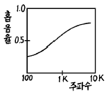
- 철판
- 암면
- 합판
- 타일
(정답률: 알수없음)
22. 확산음장으로 볼 수 있는 공장의 부피가 3000m3, 내부 표면적 S가 1700m2, 그 평균 흡음율 α 가 0.3일 때 다음 중 옳지 않은 것은?
- 실내 음선의 평균 자유전파 경로는 약 7.1m이다.
- 실정수는 약 730m2이다.
- Sabine의 잔향시간은 약 3.2초이다.
- 실내에 파워레벨 90dB의 음원을 설치할 때 실내의 평균 음압레벨은 68dB 이다.
(정답률: 알수없음)
23. 다음 중 흡음율(읓)에 대해 정의한 식으로 맞는 것은? (단, Ii : 입사음의 세기, Ir : 반사음의 세기, Ia : 흡수음의 세기, It : 투과음의 세기)
- (It -Ir)/Ii
- It/Ii
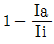
- (Ia +It)/Ii
(정답률: 알수없음)
24. 방음벽 설계시에 유의할 사항을 잘못 설명한 것은?
- 음원의 지향성이 수음측 방향으로 클 때에는 벽에 의한 감쇠치가 계산치보다 크게 된다.
- 벽의 투과손실은 회절감쇠치보다 적어도 5dB 이상 크게 하는 것이 바람직하다.
- 방음벽에 의한 실용적인 삽입손실치의 한계는 점음원일 때 15dB, 선음원일 때 25dB 이다.
- 벽의 길이는 점음원일 때 벽 높이의 5배이상, 선음원일 때 음원과 수음점 간의 직선거리의 2배 이상으로 하는 것이 바람직하다.
(정답률: 알수없음)
25. 극간이 없는 균질의 단일벽에서 확산입사파에 대한 투과 손실(TL, dB)을 나타낸 실용식으로 알맞는 것은? (단, f: 입사되는 주파수(Hz), M: 벽의 면밀도(kg/m2))
- TL = 10log(f · M) - 44
- TL = 10log(f · M) + 44
- TL = 18log(f · M) - 44
- TL = 18log(f · M) + 44
(정답률: 알수없음)
26. 단일벽의 일치효과에 관한 다음 설명중 옳지 않은 것은?
- 입사파의 파장과 벽체를 전파하는 파장이 같을 때 일어난다.
- 사용재료의 밀도가 클수록 일치효과는 저음역으로 이동한다.
- 벽체가 굴곡운동하기 때문에 일어난다.
- 차음성능이 현저히 저하한다.
(정답률: 알수없음)
27. 강당, 교회, 음악당과 같은 공개홀에서 전기적음향에 의한 직접음과 반사음의 시간차가 몇 초가 되면 그 위치를 DEAD SPOTS 또는 HOT SPOTS라고 하는가?
- 1.5 초
- 1.0 초
- 0.1 초
- 0.⑤ 초
(정답률: 알수없음)
28. 소음이 많이 발생되고 있는 소음방사부에 소음장치를 붙여 음향 출력이 W에서 W'로 변하고 음압레벨도 SPL에서 SPL'로 변하는 이론적인 식은 어느 것인가?
- SPL'= 10logW-10log(W'/W)+10log(Q/4π r2+Ri)+120dB
- SPL'= 10logW'-10log(W/W')+10log(Q/4π r2+Ri)+120dB
- SPL'= 10logW'-10log(W'/W)+10log(Q/4π r2+Ri)+120dB
- SPL'= 10logW-10log(W/W')+10log(Q/4π r2+Ri)+120dB
(정답률: 알수없음)
29. 흡음재료에 관한 설명 중 옳지 않은 것은?
- 다공판의 충진재로서 다공질 흡음재료를 사용하면 다공판의 상태, 배후공기층 등에 따른 공명흡음을 얻을 수 있다.
- 다공질 흡음재료는 음파가 재료중을 통과할 때 재료의 다공성에 따른 저항때문에 음에너지가 감쇠하며 일반적으로 중· 고음역의 흡음율이 높다.
- 다공질 흡음재료에 음향적 투명재료를 표면재로 사용하면 흡음재료의 특성에 영향을 주지않고 표면을 보호할 수 있다.
- 판상재료의 충진재로서 다공질 흡음재료를 사용하면 판의 재질, 두께, 취부방법 등에 따라 중· 고음역의 흡음성을 기대할 수 있다.
(정답률: 알수없음)
30. 표면적 200m2, 실내 평균 흡음율이 0.04인 방으로 외부에서 소음이 5m2인 문을 통하여 들어오고 있다. 만일, 실내의 흡음율을 0.1로 개선할 경우, 대책 전후의 실내음의 감음 효과는 몇 dB이 되겠는가?
- 2dB
- 3dB
- 4dB
- 5dB
(정답률: 알수없음)
31. 발파작업은 댐이나 도로 등의 큰 건설현장에서 일어나는 소음원으로 이에 대한 대책으로 틀린 것은?
- 지발당 장약량을 감소시킨다.
- 방음벽을 설치함으로써 소리의 전파를 차단한다.
- 발파는 온도나 기후조건에 영향을 받으므로 이에 대한 적절한 대책이 필요하다.
- 소음원과 수음측 사이에 도랑 등을 굴착함으로서 소음을 줄일 수 있다.
(정답률: 알수없음)
32. 원형 흡음닥트(duct)의 흡음계수(K)가 0.4 라면 직경 80cm, 길이 3m인 닥트에서의 감쇠량은 몇 dB 인가? (단, 닥트내 흡음재료두께는 무시한다.)
- 6
- 8
- 10
- 12
(정답률: 알수없음)
33. 방음벽을 계획하고 설계를 하는데 있어 음향적인 조건에 포함되지 않는 것은?
- 방음벽 높이 및 길이
- 방음벽 위치
- 방음벽 재료
- 방음벽의 안전성 및 유지, 보수, 미관
(정답률: 알수없음)
34. 차음구조를 할 경우 주의사항 중 틀린 것은?
- 커다란 차음성능을 실현시키자면 중량이 있는 구조체를 필요로 한다.
- 커다란 차음구조를 실현시키자면 이중 이상의 복합구조를 필요로 한다.
- 차음성능이 커질수록 틈에서 소리가 새어나오므로 차음성능의 증가가 현저하게 나타난다.
- 차음구조를 설치하는 것은 통기성의 차단을 의미한다
(정답률: 알수없음)
35. 한 근로자가 91dB(A) 장소에서 2시간, 94dB(A)에서 3시간 88dB(A)에서 3시간 일했을 때 소음폭로평가를 구하면 얼마인가? (단, 91dB(A)에서는 6시간, 94dB(A)에서는 6시간, 88dB(A)에서는 24시간 총 폭로시간이 허용된다.)
- 5/6
- 3/4
- 1/2
- 1/3
(정답률: 알수없음)
36. 바닥면적이 6m × 7m이고 높이가 2.5m인 방이 있다. 바닥, 벽, 천장의 흡음율이 각각 0.1, 0.4, 0.6일 때 이 방의 평균 흡음율은 대략 얼마인가?
- 0.2
- 0.3
- 0.4
- 0.5
(정답률: 알수없음)
37. 크기가 5m × 4m이고 투과손실이 40dB인 벽에 서류를 주고 받기 위한 개구부를 설치하려고 한다. 이때 이벽의 투과 손실이 20dB 이하가 되지 않게 하기 위해서는 개구부의 크기를 얼마까지 크게 할 수 있는가? (단, 개구부의 투과손실은 없는 것으로 간주하고, 계산값은 소수점 이하 둘째 자리에서 반올림한다.)
- 0.1m2
- 0.2m2
- 0.3m2
- 0.4m2
(정답률: 알수없음)
38. 자유공간에서 지향성 음원의 지향계수가 2.0이고 이 음원의 음향 파워레벨이 125dB일 때 이 음원으로부터 30m 떨어진 지향점에서의 에너지 밀도는? (단, C = 340m/sec로 한다.)
- 1.325 × 10-6J/m3
- 1.645 × 10-6J/m3
- 1.743 × 10-6J/m3
- 1.875 × 10-6J/m3
(정답률: 알수없음)
39. 소음기의 형식에 관한 설명 중 틀린 것은?
- 팽창형:음파를 확대하여 음향에너지 밀도를 크게 하여 소음하는 방식이다.
- 흡음형:닥트내에 유리솜 등 흡음물을 사용하여 소음하는 방식이다.
- 공명형:관로 도중에 구멍을 판 공통과 조합한 구조로 되어 있다.
- 간섭형:음파의 간섭에 의해 감쇠시키는 방식이다.
(정답률: 알수없음)
40. 중공이중벽의 공기층 두께가 30㎝이고, 두벽의 면 밀도가 각각 100kg/m2, 250kg/m2이라 할 때 저음역에서의 공명투과 주파수는 약 몇 Hz정도에서 발생되겠는가?
- 13Hz
- 17Hz
- 22Hz
- 27Hz
(정답률: 알수없음)
3과목: 소음진동 공정시험 기준
41. 항공기소음의 측정점에서 원추형 상부공간이란 측정위치를 지나는 지면 또는 바닥면의 법선에 어느 정도 각도의 선분이 지나는 공간을 의미하는가?
- 전각 80°
- 전각 90°
- 반각 80°
- 반각 90°
(정답률: 알수없음)
42. 소음측정시 바람으로 인한 영향을 방지하기 위하여 설치하는 방풍망에 대한 설명으로 맞는 것은?
- 측정삼각대를 둘러싸는 장치이다.
- 측정기 전체를 둘러싸는 장치이다.
- 측정기 내부의 청감보정회로에 부착하는 장치이다.
- 마이크로폰 끝에 부착하는 장치이다.
(정답률: 알수없음)
43. 소음계로 어떤 소음을 측정하여 다음과 같은 결과를 얻었다. 다음 소음의 특징은?
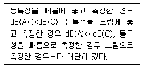
- 충격성음으로 고주파성분이 많다.
- 충격성음으로 저주파성분이 많다.
- 연속성음으로 고주파성분이 많다.
- 연속성음으로 저주파성분이 많다.
(정답률: 알수없음)
44. 진동 측정시 진동픽업(pick-up)설치에 대한 설명으로 틀린 것은?
- 진동픽업은 수평방향의 진동레벨을 측정할 수 있도록 설치하여야 한다.
- 경사 또는 요철이 없는 장소로 하고, 수평면을 충분히 확보하여야 한다.
- 완충물이 없고 충분히 다져서 굳은 장소로서 반사, 회절현상이 없는 곳이어야 한다.
- 진동픽업 및 진동레벨계는 온도, 자기, 전기 등의 영향을 받지 않는 곳이어야 한다.
(정답률: 알수없음)
45. 생활소음 측정시 피해가 예상되는 곳의 부지경계선보다 3층 거실에서 소음도가 더 클 경우 측정점은 거실창문 밖의 몇 m 떨어진 지점으로 해야 하는가?
- 0.5 ∼ 1m
- 1 ∼ 1.5m
- 1.2 ∼ 1.5m
- 1 ∼ 3.5m
(정답률: 알수없음)
46. 발파진동 측정에 관한 설명으로 알맞지 않는 것은?
- 진동레벨기록기를 사용하여 측정할 때에는 기록지상의 지시치의 최고치를 측정진동레벨로 한다.
- 진동레벨계의 출력단자와 진동레벨기록기의 입력단자를 연결한 후 전원과 기기의 동작을 점검하고 매회 교정을 실시하여야 한다.
- 진동픽업의 연결선은 잡음을 방지하기 위하여 지표면에서 일정한 높이를 두고 설치하여야 한다.
- 진동레벨계만으로 측정할 경우에는 최고 진동레벨이 고정(hold)되는 것에 한한다.
(정답률: 알수없음)
47. 발파소음 평가시, 대상소음도에 시간대별 평균발파횟수에 따른 보정량을 보정하여야 한다. 시간대별 평균발파횟수가 5회라면 보정하여야 하는 보정량은 얼마인가?
- 3dB
- 7dB
- 9dB
- 12dB
(정답률: 알수없음)
48. 표준진동 발생기에 표시되어 있어야 하는 내용을 알맞게 짝지은 것은?
- 발생진동의 발생시간과 진동속도
- 발생진동의 음압도와 진동레벨
- 발생진동의 주파수와 진동가속도레벨
- 발생진동의 음압도와 진동속도레벨
(정답률: 알수없음)
49. 소음 배출허용기준의 측점지점에 1.5m를 초과하는 장애물이 있는 경우로서 그 장애물이 방음벽인 경우 측정점은?
- 장애물 밖의 1-3.5m 떨어진 지점 중 암영대의 영향이 적은 지점
- 장애물 밖의 5-10m 떨어진 지점 중 암영대의 영향이 적은 지점
- 장애물로부터 소음원 방향으로 1-3.5m 떨어진 지점
- 장애물로부터 소음원 방향으로 5-10m 떨어진 지점
(정답률: 알수없음)
50. 적절한 측정시각에 3지점 이상의 측정지점수를 선정· 측정하여 그중 가장 높은 소음도를 측정소음도로 하는 것은?
- 생활소음
- 공장소음(배출허용기준)
- 철도소음
- 항공기소음
(정답률: 알수없음)
51. 그림에 표시한 바와같이 어떤 공장의 배기통 s에서 나오는 음을 p점에서 측정하였을 때 68[dB(A)]이었고 배경소음은 65[dB(A)]이었다 s점에서의 파워 레벨(PWL)은? (단, 지면과 벽면의 반사는 고려하지 않는다.)
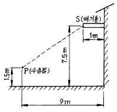
- 102 [dB]
- 100 [dB]
- 97 [dB]
- 93 [dB]
(정답률: 알수없음)
52. 소음계에서 정류기의 역할은?
- A.C(교류) 신호를 D.C(직류) 신호로 변환한다.
- 음향신호를 전기신호로 변환한다.
- 전기신호를 증폭한다.
- 변동소음을 정상소음으로 변환시킨다.
(정답률: 알수없음)
53. 소음 측정점에 관한 설명중 알맞는 것은?
- 일반지역의 경우 가능한한 반경 5m 이내에 장애물이 없는 곳을 측정점 위치로 한다.
- 상시 측정용 경우의 측정높이는 주변환경, 통행, 촉수 등을 고려하여 지면위 1.2m-8m 높이로 할 수 있다.
- 측정점 선정시에는 당해지역 소음평가에 현저한 영향을 미칠 것으로 예상되는 곳에 설치하여야 한다.
- 도로변지역의 범위는 고속도로의 경우 도로단으로부터 150m 이내의 지역을 말한다.
(정답률: 알수없음)
54. L10진동레벨 계산방법 중 진동레벨계만으로 진동을 측정할 경우 진동레벨을 읽는 순간에 지시침이 지시판 범위 위쪽을 벗어날 때 그 발생빈도를 기록하여 L10값에 2dB(V)을 더해 주게 되어 있다. 몇 회 이상 벗어날 때 인가?
- 3회
- 6회
- 9회
- 12회
(정답률: 알수없음)
55. 철도소음 측정방법으로 옳지 않는 것은?
- 옥외측정을 원칙으로 한다.
- 소음변동이 적은 평일에 당해지역의 철도소음을 측정한다.
- 소음계의 청강보정회로는 A특성에 고정하여 측정한다.
- 소음계의 동특성은 느림(slow)으로 하여 측정한다.
(정답률: 알수없음)
56. 소음· 진동공정시험방법에서 소음평가 보정치에 해당되지 않는 것은?
- 충격음
- 순음성
- 관련시간대에 대한 측정발생시간의 백분율(%)
- 시간별
(정답률: 알수없음)
57. 항공기 소음을 구하는 방식중에서 WECPNL이 있다. 여기에 서 N은 1일간 항공기의 등가 통과횟수이다. N을 구하는 공식이 맞는 것은?
- N = N2 + 3N3 + 10(N1 + 2N4)
- N = 2N2 + 4N3 + 10(N1 + N4)
- N = N2 + 3N3 + 10(N1 + N4)
- N = 2N2 + 4N3 + 10(N1 + N4 + N3)
(정답률: 알수없음)
58. 최소한의 소음계 구성요소에 포함되는 것은?
- 마이크로폰, 가변감쇠기, 교정장치, 소음도기록계
- 마이크로폰, 교정장치, 삼각대, 소음도기록계
- 마이크로폰, 증폭기, 동특성조절기, 교정장치
- 마이크로폰, 청감보정회로, 압전소자, 삼각대
(정답률: 알수없음)
59. 측정기기 및 사용기준에 관한 설명으로 틀린 것은?
- 표준음 발생기 발생음의 오차는 ± 1dB이어야 한다.
- 자동차 소음측정 측정가능 소음도는 -45~120dB 이상 이어야 한다.
- 레벨렌지 변환기의 전환오차는 0.5dB이내이어야 한다.
- 지시계기의 눈금오차는 0.5dB이내이어야 한다.
(정답률: 알수없음)
60. 진동 레벨계의 측정가능 범위는?
- 30 - 120 dB 이상
- 45 - 120 dB 이상
- 30 - 130 dB 이상
- 45 - 130 dB 이상
(정답률: 알수없음)
4과목: 진동방지기술
61. 중량 W인 물체가 스프링 상수 k인 스프링에 의해서 천장에 매달려 있다. 감쇠가 없다고 가정하고 뉴우톤의 운동방정식을 이용하여 운동방정식을 구하면 다음과 같다. 이 식에서 고유 진동수(Hz)는 다음중 어느 것인가?
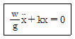
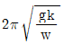
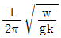
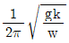
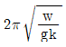
(정답률: 알수없음)
62. 일정장력 T로 잡아늘린 현(弦)이 미소횡진동을 하고 있을때 단위길이당 질량을 ρ 라 하면 전파속도 C는 얼마인가?
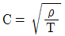
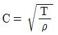
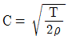
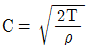
(정답률: 알수없음)
63. 다음 중 진동절연의 개념을 바르게 나타낸 것은?
- 공진형상을 막는다.
- 진동의 전달을 막는다.
- 가진력을 없앤다.
- 감쇠장치로 진동을 흡수한다.
(정답률: 알수없음)
64. 감쇠자유진동을 하는 진동계에서 진폭이 5싸이클 뒤에 50[%]만큼 감쇠됨을 관찰하였다. 이 계의 감쇠비는 얼마인가?
- 0.011
- 0.022
- 0.110
- 0.220
(정답률: 알수없음)
65. 다음 중 자려 진동의 예로 적절한 것은?
- 바이올린 현의 진동
- 회전하는 편평축의 진동
- 왕복운동 기계의 크랭크축계의 진동
- 단조기나 프레스에서 발생되는 진동
(정답률: 알수없음)
66. 기계의 무게가 565N으로 0.1초로 상하진동을 한다. 진동 전달율을 90%차단하고자 할 때, 스프링정수는 약 얼마인가? (단, 스프링은 2개로 병렬지지한다.)
- 98 N/cm
- 104 N/cm
- 112 N/cm
- 125 N/cm
(정답률: 알수없음)
67. 탄성지지설계에 대한 설명 중 맞는 것은? (단, f: 강제진동수, fn:고유진동수)
- 방진대책은 될 수 있는 한 f/fn＞√2 가 되게 설계한다
- f/fn＜√2 이 될 때에는 f/fn＜0.4가 되게 설계한다.
- fn은 질량 m의 증가에 의해서 감쇠가 이루어지지 않는다.
- 외력의 진동수가 0에서부터 증가되는 경우 감쇠가 없는 장치를 넣는 것이 좋다.
(정답률: 알수없음)
68. 소형이나 중형 기계에 많이 사용되며, 압축, 전단, 나선등의 사용방법에 따라 1개로 3축방향 및 회전방향의 스프링 정수를 광범위하게 선택할 수 있는 방진방법은?
- 직접지지 판 스프링 사용
- 공기 스프링 사용
- 기초개량
- 방진고무 사용
(정답률: 알수없음)
69. 그림과 같은 진동계의 운동 방정식으로 올바른 것은 어느 것인가?
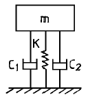
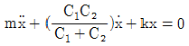
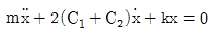
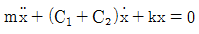
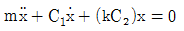
(정답률: 알수없음)
70. 아래 그림에서 질량 m은 평면내에서 움직인다. 이 계의 자유도는?
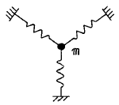
- 1 자유도
- 2 자유도
- 3 자유도
- 0 자유도
(정답률: 알수없음)
71. 두 개의 조화운동 y1=sin10t, y2=sin11t를 합성할 때 어떤 현상이 나타나는가?
- 공진(Resonance)
- 맥놀이(Beat)
- 과도현상(Transient)
- 감쇠(Damping)
(정답률: 알수없음)
72. 외부에 가해지는 강제진동수(f)와 계의 고유진동수(fn)의 비에 따라 진동전달율은 달라진다. 항상 외력보다 전달력이 작기 때문에 차진이 유효한 영역으로 알맞는 것은?
- f/fn = 1
- f/fn ＞ 2
- f/fn ＜ 2
- f/fn = 2
(정답률: 알수없음)
73. 대포를 발사할 때 포신은 스프링으로 반발할 수 있게 설계되어 있으며 진동없이 최단시간내에 원위치에 돌아가도록 감쇠기를 부착해 둔다. 이 조건을 만족하는 감쇠기의 감쇠계수는 어떻게 표시되는가? (단, m은 포신 질량, k는 스프링 상수)
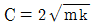
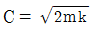
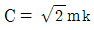
- C = 2mk
(정답률: 알수없음)
74. 다음 중 진동의 크기를 나타내는 양으로 적당하지 않은 것은?
- 진동수
- 진동속도
- 진동변위
- 진동가속도
(정답률: 알수없음)
75. 에어 스프링(air spring)에 대한 아래의 설명 중 맞는 것은?
- 하중 변화에 따라 고유진동수를 일정하게 유지할 수 있어 별도의 부대시설이 필요없다.
- 사용진폭이 큰 것이 많이 사용되므로 스프링정수 범위가 광범위하다.
- 에어 스프링은 감쇠률이 높아 별도의 댐퍼 시설이 필요없어 효과적이다.
- 에어 스프링은 지지하중의 크기가 변하는 경우에도 조정밸브에 의해서 기계 높이를 일정 레벨로 유지 할 수 있다.
(정답률: 알수없음)
76. 진동발생원의 수직방향에 대한 주파수 분석결과, 진동가 속도 실효치가 보기와 같다면 합성파의 진동가속도레벨 VAL(dB)은 약 얼마인가?
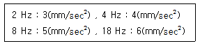
- 40
- 50
- 60
- 70
(정답률: 알수없음)
77. 어떤 기관이 2400 rpm 에서 심한 진동을 발생시킨다. 이 진동을 방지하기 위해서 감쇠가 없는 동흡진기(動吸桭器)를 사용하고자한다. 이 흡진기의 무게를 50 Newton으로 할 때 사용해야 할 스프링의 강성은?
- 약 1200 N/㎝
- 약 1600 N/㎝
- 약 2400 N/㎝
- 약 3200 N/㎝
(정답률: 알수없음)
78. 다음 중 정현진동에서 진동속도의 시간적 변화를 나타내는 진동가속도로서 맞는 것은? (단, α : 진동가속도)
- α = -(2π f)2Xosin(2π ft)
- α = -(2π f)2Xocos(2π ft)
- α = -(2π f)sin(2π ft)
- α = -2π f2Xosin(2π ft)
(정답률: 알수없음)
79. 진동수가 30Hz이고 최대가속도가 100m/s2인 조화진동의 진폭은?
- 0.157cm
- 0.281cm
- 0.314cm
- 0.434cm
(정답률: 알수없음)
80. 방진고무의 정확한 사용을 위해서 알아야 하는 동적배율(Kd/Ks)에 관한 다음 설명에서 틀린 것은? (단, Kd : 동적 스프링 정수, Ks : 정적 스프링 정수)
- 동적배율은 고무에서 1이상이 된다.
- 동적배율은 고무의 영율이 50N/cm2에서 1.6정도이다.
- 동적배율은 고무의 영율이 커지면 큰 값이 된다.
- 동적배율은 고무의 종류에 관계없이 일정하다.
(정답률: 알수없음)
5과목: 소음진동 관계 법규
81. 시· 도지사가 개선명령을 하는 때에 개선에 필요한 조치, 기계· 시설의 종류 등을 고려하여 사업자에게 줄 수 있는 개선기간은?
- 3개월의 범위내
- 6개월의 범위내
- 1년의 범위내
- 2년 6개월의 범위내
(정답률: 알수없음)
82. 다음 용어의 정의 중 옳지 않은 것은?
- 환경이란 자연환경과 생활환경을 말한다.
- 자연환경이란 지하· 지표 및 지상의 모든 생물을 포함하고, 비생물적인 것은 제외한 자연의 상태를 말한다.
- 생활환경이란 대기, 물, 폐기물, 소음, 진동, 악취, 일조 등 사람의 일상생활과 관계되는 환경을 말한다.
- 환경오염이란 사업활동 기타 사람의 활동에 따라 발생되는 대기오염, 수질오염, 토양오염, 해양오염, 방사능오염, 소음진동, 악취, 일조방해 등으로서 사람의 건강이나 환경에 피해를 주는 상태를 말한다.
(정답률: 알수없음)
83. 제작차 소음허용기준검사의 종류로 올바른 것은?
- 정기검사 및 임시검사
- 수시검사 및 특별검사
- 정기검사 및 특별검사
- 정기검사 및 수시검사
(정답률: 알수없음)
84. 공장소음 배출허용기준에 관한 설명으로 알맞지 않는 것은?
- 대상소음도를 보정한 평가소음도가 60dB(A)이하여야 한다.
- 대상소음이 충격음 성분이 있는 경우의 보정치는 '+5' 이다.
- 전용주거지역, 녹지지역에서의 보정치는 '0'이다.
- 일반공업지역, 전용공업지역에서의 보정치는 '-20' 이다.
(정답률: 알수없음)
85. 소음방지시설과 가장 거리가 먼 것은?
- 방음터널시설
- 방음구시설
- 방음림 및 방음언덕
- 흡음장치 및 시설
(정답률: 알수없음)
86. 측정망 설치계획에 관한 내용 중 틀린 것은? (단, 환경관리청장=유역환경청장, 지방환경관리청장=지방 환경청장)
- 측정망설치계획에는 측정소를 설치할 건축물의 면적이 명시되어 있어야 한다.
- 측정망설치계획 고시는 측정소설치계획이 확정된 후 3월동안 하여야 한다.
- 측정망설치계획에는 측정망의 배치도가 명시되어 있어야 한다.
- 측정망설치계획을 결정· 고시하고자 하는 경우에는 그 설치위치 등에 관하여 미리 관할 환경관리청장 또는 지방환경관리청장의 의견을 들어야 한다.
(정답률: 알수없음)
87. 환경부장관의 인증을 면제할 수 있는 자동차는?
- 항공기 지상조업용으로 반입하는 자동차
- 외교관이 사용하기 위해 반입하는 자동차
- 여행자등이 다시 반출할 것을 조건으로 일시 반입 하는 자동차
- 외국에서 국내 비영리단체에 무상으로 기증하여 반입 하는 자동차
(정답률: 알수없음)
88. 운행자동차의 경적소음 허용기준은 몇 dB(C)이하 인가? (단, 1999년 12월31일 이전에 제작된 자동차 기준)
- 1⑤
- 110
- 115
- 120
(정답률: 알수없음)
89. 다음 중 동력을 사용하는 시설 및 기계· 기구에 속하는 진동배출시설이 아닌 것은?
- 기압식을 제외한 10마력이상의 단조기
- 유압식을 제외한 20마력이상의 프레스
- 파쇄기를 포함한 30마력이상의 분쇄기
- 압출· 사출을 포함한 50마력이상의 성형기
(정답률: 알수없음)
90. 배출시설의 설치가 가능한 지역에서 설치허가를 받지 않고 배출시설을 한 경우의 행정처분은?
- 허가취소
- 폐쇄명령
- 이전명령
- 사용중지명령
(정답률: 알수없음)
91. 배출시설의 허가를 받은 자가 그 허가를 받은 사항을 변경하고자 할 때에는 변경신고를 하여야 한다. 그 대상 범위로 맞는 것은?
- 배출시설의 규모를 100분의 30이상(신고 또는 변경 신고를 하거나 허가를 받은 규모를 증설하는 누계)증설하는 경우
- 배출시설의 규모를 100분의 50이상(신고 또는 변경 신고를 하거나 허가를 받은 규모를 증설하는 누계)증설하는 경우
- 배출시설의 규모를 100분의 30이상(신고 또는 변경 신고를 하거나 허가를 받은 규모를 증감하는 누계)증감하는 경우
- 배출시설의 규모를 100분의 50이상(신고 또는 변경 신고를 하거나 허가를 받은 규모를 증감하는 누계)증감하는 경우
(정답률: 알수없음)
92. 조업중인 공장에서 소음· 진동배출허용기준을 초과하여 개선명령을 받고도 부득이한 사유로 인하여 조치를 완료하지 못한 경우 연장할 수 있는 기간은?
- 3월
- 6월
- 9월
- 1년
(정답률: 알수없음)
93. 1년이하의 징역 또는 500만원 이하의 벌금사항에 맞지 않는 것은?
- 허가없이 배출시설을 설치한 자
- 배출시설의 가동개시 신고없이 조업한 자
- 개선명령 불이행에 대한 조업정지 명령을 위반한 자
- 생활소음 규제기준을 초과하여 작업시간의 조정명령을 위반한 자
(정답률: 알수없음)
94. 특정공사의 사전신고대상 기계· 장비의 종류에 해당되지 않는 것은?
- 병타기
- 압입식 항타항발기
- 건축물 파괴용 강구
- 굴삭기
(정답률: 알수없음)
95. 자동차의 사용정지명령을 위반한 자에 대한 벌칙으로 적절한 것은?
- 1년이하의 징역 또는 500만원이하의 벌금
- 6월이하의 징역 또는 200만원이하의 벌금
- 3월이하의 징역 또는 100만원이하의 벌금
- 100만원이하의 벌금
(정답률: 알수없음)
96. 공장진동 배출허용기준은 평가진동레벨이 몇 dB(V)이하 인가?
- 45
- 50
- 55
- 60
(정답률: 알수없음)
97. 환경관리인을 두어야 할 사업장 및 그 자격기준 등에 관한 설명으로 틀린 것은?
- 환경관리인으로 임명된 자는 당해 사업장에 상시 근무하여야 한다.
- 총동력합계는 소음배출시설 중 기계· 기구의 마력의 총합계를 말하며 대수기준시설 및 기계· 기구와 기타 시설 및 기계· 기구는 제외한다.
- 방지시설면제 사업장의 환경관리인은 대상사업장 동력규모에 따라 사업자가 당해 사업장의 배출, 방지시설업무 종사자를 임명할 수 있다.
- 소음진동기사 2급(산업기사)은 기계분야기사, 전기분야기사, 대기환경기사, 수질환경기사 각 2급(산업기사)이상의 자격소지자로서 환경분야에서 2년이상 종사한 자로 대체할 수 있다.
(정답률: 알수없음)
98. 시·도지사가 매년 환경부장관에게 보고하는 연차보고서에 포함되어야 하는 내용으로 알맞지 않는 것은?
- 소음·진동발생원 및 소음· 진동현황
- 소음·진동 발생원에 대한 행정처분 및 지원실적
- 소음·진동저감대책 추진실적 및 추진계획
- 소요재원의 확보계획
(정답률: 알수없음)
99. 소음진동규제법상 KW를 진동배출시설 기준이 되는 마력으로 환산하는 방법으로 적절한 것은?
- KW × (4분의 3)로 하며, 소수점 이하 첫째자리에서 반올림 한다.
- KW × (4분의 3)로 하며, 소수점 이하는 끊어버린다.
- KW × (3분의 4)로 하며, 소수점 이하는 끊어버린다.
- KW × (3분의 4)로 하며, 소수점 이하 첫째자리에서 반올림한다.
(정답률: 알수없음)
100. 생활소음 규제기준 중 확성기에 의한 소음기준은? (단, 옥외설치, 시간대: 22:00∼⑤:00, 주거지역)
- 60dB(A)이하
- 65dB(A)이하
- 70dB(A)이하
- 80dB(A)이하
(정답률: 알수없음)